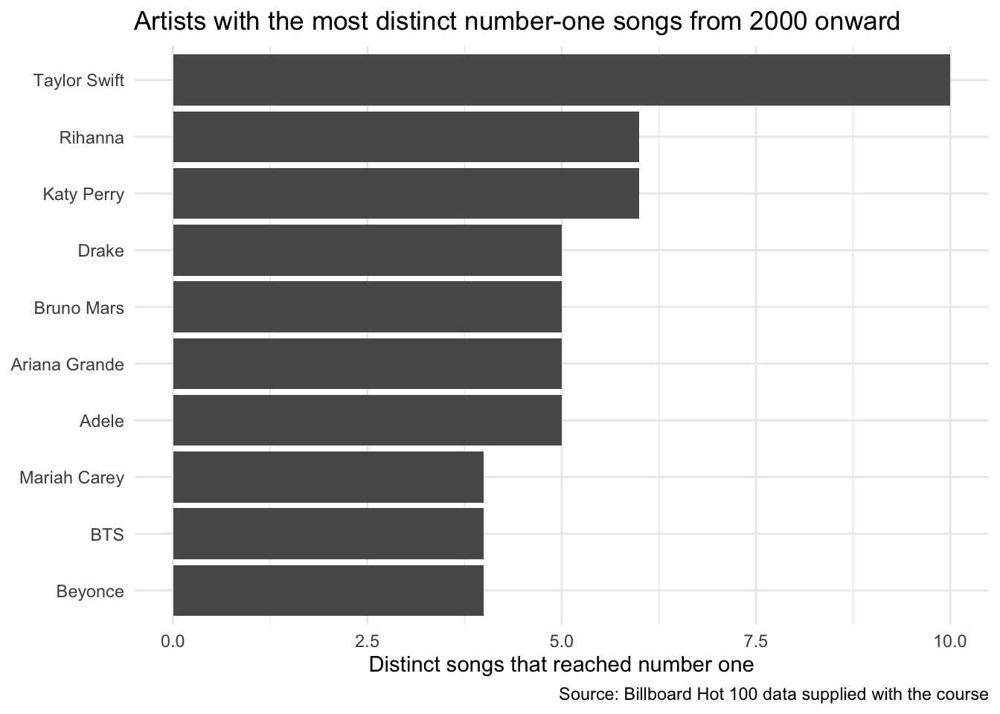

The case studies reuse the tidyverse workflow with new topics and data structures. Instead of repeating every step from the main dataset, each case concentrates on a challenge that commonly appears in journalistic data.
The new challenge: identify the song and define success
One row is one song on one weekly chart, not one unique song. Different artists can also release songs with the same title. Before ranking artists, we must decide how to identify a song and what “success” means: chart appearances, distinct Hot 100 songs, distinct number-one songs, or weeks at number one.
11.1 Learning objectives
By the end of this case, you should be able to:
explain why one song can appear in many rows;
identify a song with its artist and title together;
compare different measures of chart success;
distinguish weekly appearances from distinct-song counts; and
label a ranking with the measure actually calculated.
11.2 Set up the case
The column names in the source contain capital letters and spaces. rename() gives them shorter working names. parse_number() turns values such as text containing a number into numeric values.
Continue in the same project
Open djr.Rproj and create 09-hot100.Rmd. Download hot100.csv and save it in data/. This case changes the topic, but it uses the same project and tidyverse workflow.
One row represents one song’s position on one weekly chart date. A song that appears for 20 weeks contributes 20 rows.
11.3 Strategy 1: identify a song with two columns
A title alone does not always identify a song. Several artists may have songs with the same title. The following check keeps every artist-title combination once, then finds titles associated with more than one artist:
For this case, we define a unique song as one published artist–song combination. This is an analytical rule, not a universal identifier. Remixes, featured artists, and changing chart credits may require additional reporting decisions.
11.4 Strategy 2: define the period and threshold
We will study chart records from 2000 onward. First create the period, then make the number-one subset used by several measures:
The date boundary makes “from 2000 onward” precise. The end of the period is the latest date contained in the supplied file.
The next decision is the chart threshold. “Appeared in the Hot 100,” “reached the top 10,” and “reached number one” are different achievements. A defensible analysis names the threshold before counting.
11.5 Compare measures of success
Consider the reporting question:
Which artists were most successful on the Billboard Hot 100 from 2000 onward?
The dataset does not contain one correct success column. We could measure:
Measure
What it counts
Distinct Hot 100 songs
Different artist-title combinations appearing anywhere on the chart
Distinct number-one songs
Different artist-title combinations that reached number one
Grouping by title alone could combine different songs that happen to share a name.
11.9 Make the label match the metric
Create a bar chart of distinct number-one songs:
top_artists <- artist_songs |>slice_head(n =10)top_artists |>ggplot(aes(x = n, y =fct_reorder(artist, n))) +geom_col() +labs(title ="Artists with the most distinct number-one songs from 2000 onward",x ="Distinct songs that reached number one",y =NULL,caption ="Source: Billboard Hot 100 data supplied with the course" ) +theme_minimal()

If the code counts weekly rows, the title must say weeks or weekly appearances. Calling both measures “number of songs” would change the finding.
11.10 Check artist credits
The artist column contains the credit printed on the chart. A performer may appear alone, with a featured artist, or as part of a group. Before combining names, inspect possible variants:
This analysis ranks published credit strings. Splitting collaborations or merging name variants requires a rule that should be documented.
11.11 Practice
Choose a decade and calculate:
distinct Hot 100 songs by artist;
weekly number-one appearances by artist;
distinct number-one songs by artist; and
weeks at number one by artist-song pair.
Compare the leading five results. Make one chart whose title and axis describe the chosen metric exactly, and write one note about collaborations or artist name variants.
11.12 Takeaways
Function
What it does in this case
rename()
Gives difficult source columns shorter working names
parse_number()
Converts a column containing numeric text
filter()
Defines the dates and chart position included
count()
Counts weekly chart rows at the current grouping
distinct()
Keeps one artist-song combination before counting
str_detect()
Searches artist credits for possible name variants
Metric definition
Turns the broad idea of “success” into a reproducible measure
Want more control?
The official stringr reference lists other tidyverse tools for finding and cleaning text. Use them only when the published artist credits require another rule.